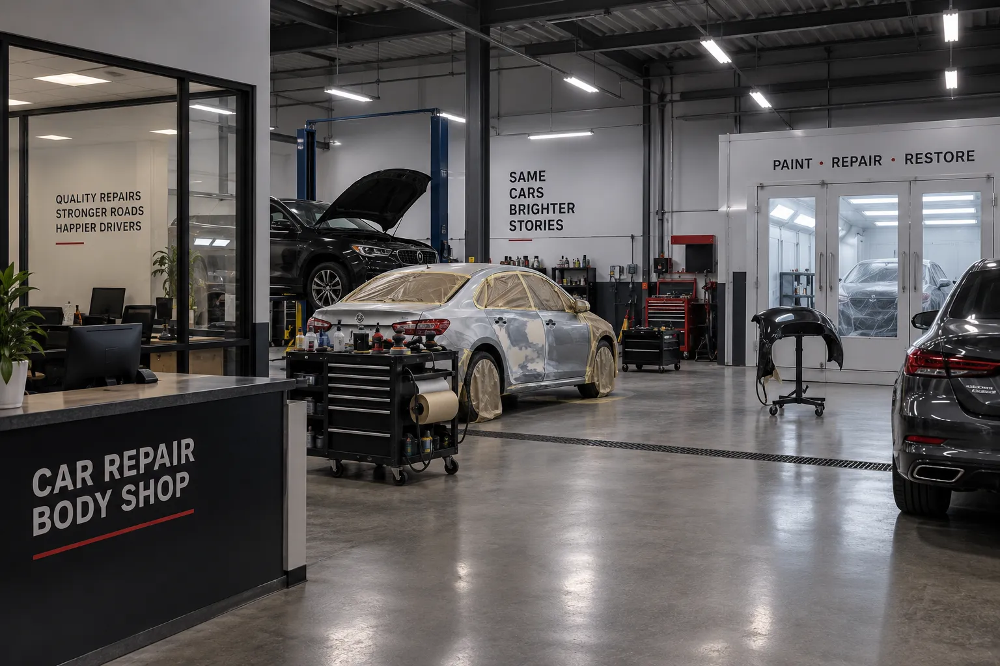

{{ s.num }}
{{ s.titulo }}
{{ s.texto }}

Taller de colisión en la Ciudad de Guatemala. Envíe fotos del daño por WhatsApp y reciba su presupuesto sin salir de casa.
14 Avenida 4-24, Zona 11, Ciudad de GuatemalaDeslice para comparar. Enderezamos la lámina, igualamos el color y devolvemos el brillo.